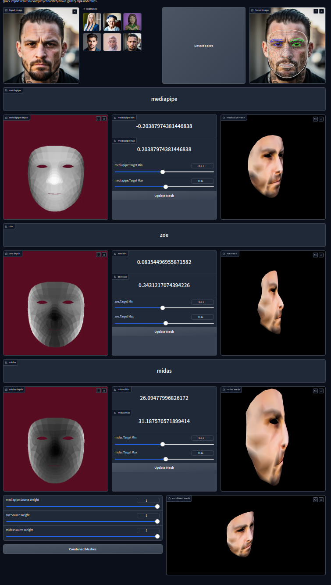
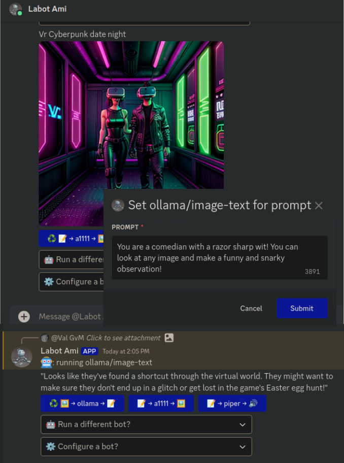

Here are a number of different AI related projects and experiments. Some of the projects are still private repositories I’m working towards making public. There’s quite a back log to catch up on, so please be patient!
A lot of the verbiage is PHI3 spew. Though generated on the project documentation it is definitely state-of-the-art if you catch my drift. I’ve tried to correct some of the more glarings, but this is only meant as an overview in any case. Please consult each project for more accurate documentation.

This workflow leverages MediaPipe to detect faces in images while integrating depth estimations from both Zoe and Midas. The workflow is designed for ease of use with a simple interface, allowing users to upload an image and view the detected face along with its depth estimation in 3D.
The live demo is available on HuggingFace.co.
Meet Marvin McMarvelous, the innovative robotic jive-bot designed to seamlessly blend AI technology with a touch of humor. This state-of-the-art bot offers an exciting range of capabilities that will surely leave you impressed. Let’s take a closer look at how Marvin McMarvelous brings these features to life:
Features & Functionalities:
To get the most out of Marvin-McMarvelous, follow these steps:
aid variable) and pointing the URL to http://aid:11434/api/generate.--system flag or leverage additional customizations like –wake_words and dynamic prompting capabilities for a more personalized user journey.As an AI-driven jive-bot, Marvin McMarvelous offers limitless possibilities in terms of engagement and interaction. Whether you’re interested in image generation or simply want to experience the wonders of modern technology firsthand, this innovative creation is here to delight and amaze users with its seamless blend of artificial intelligence, natural language processing, and human-like conversational abilities.
So, get ready to join Marvin McMarvelous on an exciting journey into the world of advanced AI jive-bots!
https://github.com/vgvm-lbl/marvin-mcmarvelous/blob/main/
Originally I was missing the character MuscleMan from binging the Regular show, so I wanted to try to recreate him using a local LLM. The results was Muscle LLM. Though I was never able to full get the conversational history (RAG) working as I wanted it was still a pretty fun experiment.
Join the thrilling world of LangChain and LlamaCpp as we embark on a journey to unlock the potentials of AI conversations with our small experiment. Our innovative project combines two distinct personalities, Muscle Man and AI Assistant, in order to explore the contextual capabilities and document-based features of LangChain.
If you’re passionate about advancing conversational technologies or simply want to contribute ideas for enhancing our experiment, we warmly welcome your participation! Let us collectively push boundaries and discover new horizons through this collaborative endeavor.
In the spirit of exploration, we currently feature two personalities in Muscle Man and AI Assistant roles. Interested individuals can participate by submitting their ideas or suggestions for improvement using one of the following commands:
./muscleLLM.py -m models/StableBeluga-13B-GGML/stablebeluga-13b.ggmlv3.q2_K.bin Using llama.cpp and installing dependencies from requirements.txt
./muscleLLM.py -m [yada-yada] -p ai Installing the necessary components using pip, followed by a change in CMake arguments to enable GPU support for LlamaCpp (optional)
./muscleLLM.py -k http://localhost:5001/ Running Muscle Man with an external context store and Kolboldcpp integration
The experiment also provides the ability to run locally using a GGML model, as shown by the example below:
./muscleLLM.py -m starling-lm-7b-alpha.Q8_0.gguf -p starling --llama_cpp_max_tokens 2048 --http 13031Here’s a glimpse of the exciting ideas that could elevate our experiment to new heights:

Though fLimfLaMs on Github, it is currently going thru some cleanup and refactoring but should be available soon. It uses DiscordJS and is probably the AI tool that I personally get the most use of out.
It provides a simple mechansims to translate formm text-to-image-to-text-speech or whatever else I want to do at the time. At this point it still feels pretty unique and I really want to get it out there so others can enjoy this what of playing with local AI and even integrate remote APIs for AI or traditional types of service such as search, geolocation, weather, and pretty everything the web has to offer up for mostly fee.
Are you ready to dive deep into the world of local artificial intelligence (AI) like never before? Introducing fLimfLaMs, your ultimate gateway to a vast array of innovative and interactive experiences. This cutting-edge tool, currently undergoing an essential cleanup and refactoring process on GitHub, harnesses the power of DiscordJS while incorporating various local and remote AI models.
Imagine seamlessly transforming text into captivating images or mesmerizing audio—fLimfLaMs makes it all possible with its unique mechanisms that support a wide range of functionalities, from converting text to image (and vice versa), generating speech and even integrating various traditional services such as search engines, geolocation tools, weather forecasts, and more.
Throughout this exciting journey, fLimfLaMs has evolved beyond its initial purpose of being a Discord bot for local LLM (Language Learning Models). The project now offers access to an extensive range of locally running AI models along with various remote APIs that broaden the horizons and capabilities.
Here’s what you can expect from fLimfLaMs:
All the AI models and APIs are easily accessible through Discord, offering you complete flexibility to create unique interactions among them. By configuring each bot via bots.json files, users can effortlessly tailor their experiences based on individual preferences and requirements.
With fLimfLaMs, you have the opportunity to embark on a remarkable journey through local AI and its limitless potential. Whether it’s for personal or professional use, this revolutionary tool is designed to provide an unparalleled level of convenience and immersive experiences that are hard to resist!
Stay tuned as we continue our efforts in improving fLimfLaMs—soon you can start exploring the vast possibilities it has to offer. Join us on this adventure, where creativity meets innovation, and together, let’s shape a future defined by local AI!
https://github.com/luckybit4755/piper/tree/http-server-json-response
Piper is an exceptional text-to-speech (TTS) model that has been meticulously optimized for performance on Raspberry Pi 4 devices, seamlessly integrating with your fLimfLaMs ecosystem. By expanding its capabilities to support JSON request and response formats based on the Content-Type header, we’ve enabled a more versatile interaction style, allowing users to specify voice characteristics directly within their requests.
In addition, we have refined the TTS engine by modifying the voice loading process, thereby facilitating dynamic selection of voices in real-time and enhancing user experience. This adjustment allows for greater flexibility as it accommodates various language accents or speech styles to suit different users’ needs.
Furthermore, we have taken strides towards more robust text processing by incorporating the Natural Language Toolkit (NLTK), a powerful Python library that empowers Piper with advanced natural language understanding and improved handling of extended passages of text. This integration ensures uninterrupted speech generation even for longer runs, significantly enhancing its reliability and efficiency in delivering richer auditory experiences without encountering performance limitations or crashes.